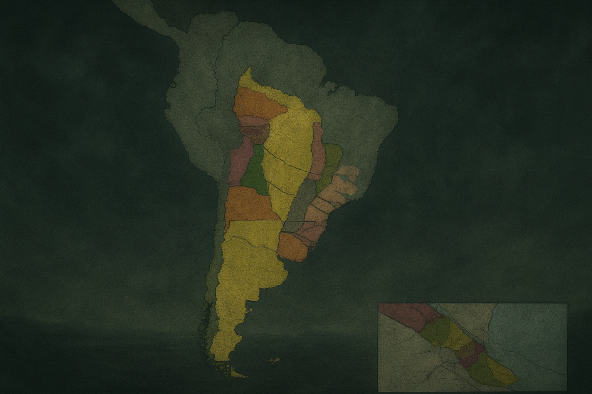

Mapa de la Revolución de Mayo (1810)

Este módulo forma parte del universo Revolución Nacional y tiene como objetivo mostrar la evolución del territorio argentino a lo largo de los siglos, integrando historia, geografía y tecnología interactiva.